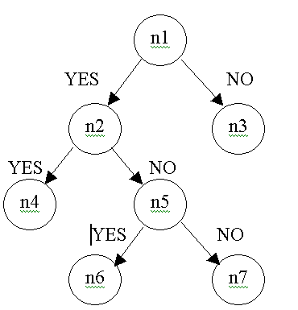

decision tree distribution |
| Decision tree is a binary tree in which each node (except leaves – terminal nodes) contains a question with two possible answer: yes or no. For example, question may be: X is equal 5, or Y is greater than 2.5. Terminal node contains some “decision” that is taken when a descent on decision tree is finished in this node from the root through some questions. Decision tree may be effectively used in Bayesian networks to represent conditional discrete or continuous nodes, which really depend on a part of their parents or some parents configurations. This way lets to reduce amount of memory usage for such nodes and to compute nodes that have more than 400 parents. Of course, a list of possible questions, that may be used in decision tree node, must be specified and a necessary methods to form a tree in such node must be realized.
|
Simple examble

Consider a net that contains two discrete nodes d1, d2 and one tree node t1. Node sizes are 2, 3 and 2.
Nodes d1 and d2 are discrete parents of discrete tree node t1. |
| Discrete node t1 has tree: |
|  |
Nodes n1, n2, and n5 are non-terminal nodes, n3, n4, n6 and n7 are terminal nodes.
Node n1 question is d1 = 0.
Node n2 question is d2 >= 1.
Node n5 question is d2 = 0.
Node n3 distribution is 0.5, 0.5.
Node n4 distribution is 0.7, 0.3.
Node n6 distribution is 0.4, 0.6.
Node n7 distribution is 0.3, 0.7.
|